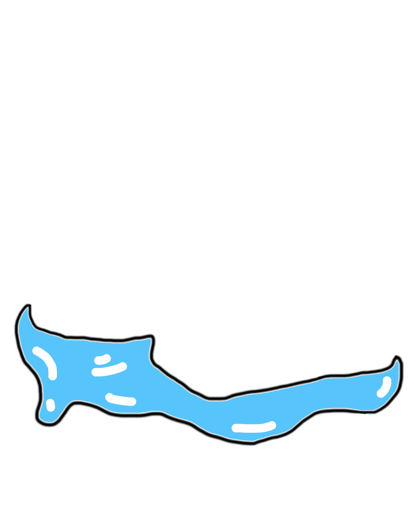
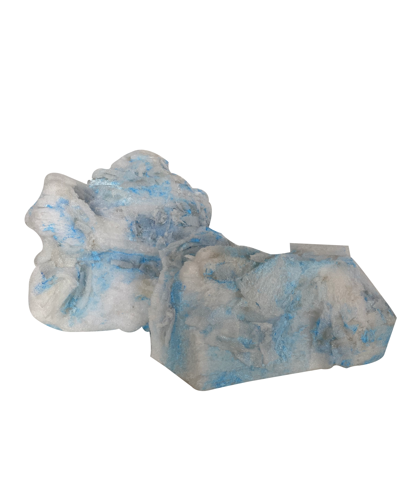

<!DOCTYPE html>
<html lang="en">
<head>
    <meta charset="UTF-8">
    <meta name="viewport" content="width=device-width, user-scalable=no, minimum-scale=1.0, maximum-scale=1.0">
    <title>Document</title>
    <link rel="stylesheet" href="style.css">
</head>
<body  style='margin : 0px; overflow: hidden;'>
    <!-- <h2>Demo</h2>
    <div class="show">
        
        
    </div> -->
    <!-- Augmented Reality on the Web in 10 lines of html! https://github.com/jeromeetienne/ar.js --> 
	<a-scene embedded artoolkit='sourceType: webcam;'>
	<a-sphere src="https://raw.githubusercontent.com/aframevr/sample-assets/master/assets/images/space/earth_atmos_4096.jpg" radius="0.5" position="0 0.5 0" segments-height="53">
         <a-animation attribute="scale"
              dur="500" 
              from= "1 1 1"
              to="2 2 2"
              direction='alternate-reverse'
              easing= "ease-in-out-circ"     
              repeat="1000"></a-animation>
     </a-sphere>
        <a-marker-camera type='pattern' url='pattern-iceberg-21.patt'></a-marker-camera>
	</a-scene>
<script src="https://aframe.io/releases/0.6.0/aframe.min.js"></script>
<script src="https://rawgit.com/jeromeetienne/ar.js/master/aframe/build/aframe-ar.js"></script>
<script>THREEx.ArToolkitContext.baseURL = 'https://rawgit.com/jeromeetienne/ar.js/master/three.js/'</script>
</body>
</html>